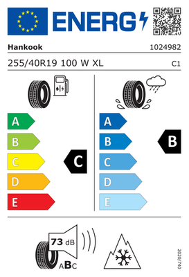

Reifen
„Wenn du an deinem Auto schraubst, achte auf deine Sicherheit. Ein guter Wagenheber ist Pflicht*.“
Reifenwechsel
Von O bis O (Oktober bis Ostern): rechtzeitig auf Sommer- oder Winterreifen wechseln, um bei jeder Witterung optimalen Grip zu haben. Beim Radwechsel sind zu lockere Radmuttern genauso gefährlich wie zu fest angezogene, wodurch Alufelgen und Radschrauben beschädigt werden können. Mit einem zuverlässigen Drehmomentschlüssel gehst du auf Nr. sicher*
Profiltiefe
Gesetzlich sind 1,6 mm vorgeschrieben – empfohlen werden 3 mm (Sommer) bzw. 4 mm (Winter) für sichere Fahreigenschaften bei Nässe.
Aquaplaning
Das Profil verdrängt Wasser aus der Kontaktfläche. Bei viel Wasser, höherem Tempo und geringerem Profil kann der Reifen den Kontakt zur Fahrbahn verlieren – das Auto wird leicht und reagiert kaum noch auf Lenkung und Bremsen.
Einlagerung
🏬 Beim Händler erfolgen die fachgerechte Lagerung, Sichtprüfung sowie Erinnerung an den nächsten Wechseltermin ohne Platzproblem gegen ein kleines Entgelt.
🏠 Zu Hause ist es zwar kostenlos, aber du musst sie selber in den Keller schleppen, kühl, trocken und ohne Sonneneinstrahlung aufbewahren.
Sommer, Winter & Ganzjahresreifen
Spezialisten für extreme Temperaturen oder der praktische Kompromiss für gemäßigte Regionen mit dem Alpine-Symbol (3PMSF).
Reifenbreite vs. Spritverbrauch
Breitere Reifen bieten mehr Grip und Sportlichkeit, erhöhen aber durch den gesteigerten Rollwiderstand spürbar den Kraftstoffverbrauch.
Reifenmontage
Fachgerechtes Aufziehen auf die Felge inklusive Erneuerung der Ventile und exakter Druckprüfung für maximale Langlebigkeit. Metallventile sind nicht pauschal per Gesetz vorgeschrieben, werden aber ab Geschwindigkeitsindex V, W, Y oder Z (über 210 km/h) oder bei entsprechender Vorgabe im Felgengutachten Pflicht – bei hohem Tempo können Fliehkräfte Gummiventile verbiegen und Luft entweichen lassen. Auch bei manchen RDKS-Reifendrucksensoren sind feste Metallventile stabiler oder vorgeschrieben.
Auswuchten
Verhindert lästiges Lenkradflattern und ungleichmäßigen, schnellen Reifenverschleiß durch die Korrektur kleinster Gewichtsverteilungen.
Beschädigungen
Risse, eingefahrene Nägel oder Beulen an der Flanke sind ein Fall für den Profi – im Zweifel hilft nur der sofortige Austausch.
Alter & DOT
Die Gummimischung deines Reifens altert unabhängig vom Profil: Mit den Jahren wird das Gummi hart und spröde. Feine Risse in der Flanke bedeuten eine ernste Gefahr und können im schlimmsten Fall zum Platzen führen. Eine allgemeine gesetzliche Altersgrenze gibt es für Pkw-Reifen nicht, ab etwa 6 Jahren sollten Reifen regelmäßig fachkundig geprüft und spätestens nach 10 Jahren dann endgültig ersetzt werden.
Die vierstellige DOT-Nummer auf der Reifenflanke zeigt das Herstellungsdatum an: Die ersten zwei Ziffern die Kalenderwoche, die letzten zwei das Jahr. 1123 bedeutet also: hergestellt in der 11. Woche des Jahres 2023.
Tests statt Markenimage
Ein guter Reifen muss nicht nur teuer sein: aktuelle Tests zeigen Unterschiede besonders bei Nässe, Bremsweg und Aquaplaning.
Luftdruck regelmäßig selbst prüfen
Der richtige Luftdruck ist einer der einfachsten Hebel für Sicherheit und Spritverbrauch – zu wenig Druck erhöht Bremsweg, Verschleiß und Kraftstoffkosten spürbar. Mit einer eigenen Luftpumpe* lässt sich der Druck jederzeit zu Hause kontrollieren und anpassen, ohne extra zur Tankstelle zu fahren.
Sommer-, Winter- oder Ganzjahresreifen?
Alpine-Symbol entscheidet
Nur Reifen mit dem Alpine-Symbol (Schneeflocke im Bergpiktogramm, kurz 3PMSF) gelten in Deutschland als rechtssicherer Winterreifen. Es gilt die sogenannte situative Winterreifenpflicht: Bei Glätte, Schnee oder Reifglätte müssen entsprechend ausgestattete Reifen montiert sein, unabhängig vom Datum. Die Faustregel „O bis O“ (Oktober bis Ostern) ist daher nur eine Orientierung, keine feste Vorschrift.
Spezialisten sind die bessere Wahl
Bei hoher Jahresfahrleistung, ausgeprägten Jahreszeiten oder einem sportlichen bzw. schweren Fahrzeug: In Extremsituationen wie Blitzeis oder sommerlicher Hitze schneiden Sommer- und Winterreifen bei Bremsweg und Verschleiß besser ab als der Kompromiss.
Ganzjahresreifen genügen
Bei geringer Jahresfahrleistung, milden Regionen ohne Extremwinter oder -hitze und überwiegendem Stadtverkehr ist der Kompromiss aus einem Reifensatz praktisch und ausreichend sicher.
Markenreifen vs. günstige Reifen – lohnt sich der Aufpreis?
Die Qualität von Budget-Reifen hat sich über die Jahre verbessert, in unabhängigen Tests von ADAC, Stiftung Warentest oder GTÜ zeigen sich Unterschiede aber weiterhin vor allem in Extremsituationen: längerer Bremsweg bei Nässe, früheres Aquaplaning und schnellerer Verschleiß. Als grobe Preisorientierung für eine gängige Größe wie 205/55 R16:
Premium
100–160 €+Etablierte Hersteller wie Continental, Michelin, Bridgestone, Goodyear oder Pirelli. Beste Werte bei Nässe, Aquaplaning und Laufleistung.
Mittelklasse
70–100 €Bekannte Zweitmarken großer Hersteller. Guter Kompromiss aus Preis und Sicherheitsreserven für die meisten Alltagsfahrer.
Budget
50–70 €Günstige Reifen, oft aus Fernost. Für wenig gefahrene Kilometer und trockene Bedingungen meist ausreichend.
Der Preis allein sagt wenig über die Qualität aus. Entscheidend sind das konkrete Modell, die Dimension und der Einsatzzweck. Gerade bei Nässe können sich Bremsweg und Aquaplaningverhalten deutlich unterscheiden. Deshalb nicht einfach nach „Premium“, „Mittelklasse“ oder „Budget“ kaufen, sondern aktuelle Reifentests für die eigene Größe heranziehen. Wichtig: Ein Testsieger in 225/50 R17 ist nicht automatisch die beste Wahl in 205/55 R16 – Konstruktion und Mischung können sich je Dimension unterscheiden. Auch das Reifenlabel ist hilfreich, ersetzt aber keinen unabhängigen Test.
Aktuelle Reifentests: Was die Ergebnisse zeigen
Reifentests sind immer eine Momentaufnahme für eine bestimmte Reifengröße. Trotzdem zeigen sie sehr deutlich, warum ein genauer Vergleich sinnvoll ist: Zwischen guten und schlechten Modellen können beim Bremsen, bei Nässe und beim Aquaplaning erhebliche Unterschiede liegen.
Sommerreifen-Test 2026
225/50 R17Im aktuellen ADAC-Test erreichte der Continental PremiumContact 7 mit 1,9 die beste Gesamtnote. Insgesamt wurden 16 Modelle geprüft; drei erhielten „gut“, drei waren nicht empfehlenswert.
Ganzjahresreifen-Test 2025
225/45 R17Von 16 getesteten Modellen erhielten vier die Note „gut“. Goodyear Vector 4Seasons Gen-3 und Continental AllSeasonContact 2 lagen mit 2,3 vorn. Vier Reifen fielen mit „mangelhaft“ durch.
Was wirklich zählt
Bei der Auswahl nicht nur auf Preis oder Laufleistung schauen. Nassbremsen, Aquaplaning, Verhalten bei Ausweichmanövern und winterliche Haftung können im Ernstfall wichtiger sein als ein paar Euro Preisunterschied.
„Durch regelmäßiges Auswuchten läuft das Auto ruhiger und du verhinderst damit den vorzeitigen Verschleiß von Radlagern, Achsschenkeln, Stoßdämpfern und Lenkung.“
Reifenlabel: Drei Werte, die du kennen solltest
Rollwiderstand
Die Effizienzklasse beschreibt, wie stark der Reifen den Energieverbrauch beeinflusst. Bei E-Autos kann ein niedriger Rollwiderstand die Reichweite unterstützen.
Nasshaftung
Die Nasshaftungsklasse ist ein wichtiger Vergleichswert für die Bremsleistung bei Nässe, ersetzt aber keinen unabhängigen Reifentest.
Außengeräusch
Das Reifenlabel nennt das externe Rollgeräusch in dB. Im Elektroauto fallen Abrollgeräusche subjektiv stärker auf, weil Motor- und Abgasgeräusche weitgehend fehlen.

E-Auto-Reifen: Was bei Tesla & Co. anders ist
Elektroautos stellen andere Anforderungen an Reifen als Verbrenner – nicht wegen des Antriebs an sich, sondern wegen Gewicht, Kraftentfaltung und Reichweite. Viele Hersteller bieten deshalb inzwischen spezielle EV-Reifen an, teils sogar fahrzeugspezifisch zertifiziert (z. B. mit eigener Kennzeichnung für bestimmte Tesla-Modelle).
Gewicht & Drehmoment
Das Batteriegewicht erhöht die Achslast spürbar, das sofort verfügbare Drehmoment belastet die Reifen zusätzlich beim Beschleunigen – Folge ist oft ein merklich schnellerer Verschleiß als bei vergleichbaren Verbrennern.
Spezielle EV-Reifen
Verstärkte Karkasse für das Mehrgewicht, teils fahrzeugspezifisch abgestimmt und akustisch optimiert – ohne Motorengeräusch fallen Abrollgeräusche stärker auf. Pflicht sind sie nicht, wichtig ist aber ein ausreichender Load-Index.
Reichweite & Rollwiderstand
Ein niedriger Rollwiderstand wirkt sich direkt auf die Reichweite aus. Beim Reifenlabel lohnt sich deshalb ein Blick auf die Kraftstoff- bzw. Energieeffizienzklasse, nicht nur auf Nässe- und Lärmwerte.